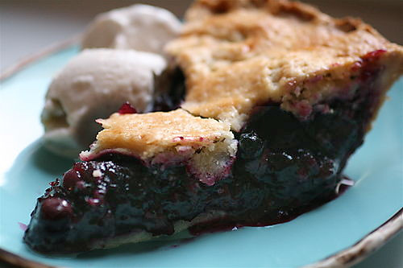

Blueberry Pie

Blueberry Pie
You can keep covered blueberry pie at room temperature for about two days. If you intend to keep the pie longer than that, you should keep it in the refrigerator. It will last there for up to five days.
Yes, you can freeze blueberry pie. If you intend to freeze the pie, go ahead and bake it in a foil pan. Wrap the whole pan in plastic storage wrap, then wrap it again in aluminum foil. Freeze for up to six months.
Ingredients
- ¾ cup white sugar
- 3 tablespoons cornstarch
- ½ teaspoon ground cinnamon
- ¼ teaspoon salt
- 4 cups fresh blueberries
- 1 (14.1 ounce/2 pack) package ready-to-bake pie crusts, thawed
- 1 tablespoon butter
Steps
- Gather all ingredients. Preheat the oven to 375 degrees F (190 degrees C) with oven rack in lowest position.
- Combine sugar, cornstarch, cinnamon, and salt in a bowl; sprinkle over blueberries in a separate bowl.
- Line a 9-inch pie plate with 1 pie crust. Pour berry mixture into crust; dot with butter. Cut remaining pie crust into ½- to ¾-inch-wide strips. Moisten the rim of the pie with a small amount of water. Start with the longest strips and lay the first 2 in an X in the center of the pie. Alternate horizontal and vertical strips, weaving them in an over-and-under pattern. Use the shortest strips for the edges of the lattice. Fold the ends of the lattice strips under the edge of the bottom crust and flute the crust.
- Bake in the preheated oven on the lowest oven rack until filling is bubbling and crust is golden brown, about 50 minutes.
- Cut into slices and enjoy!
Home